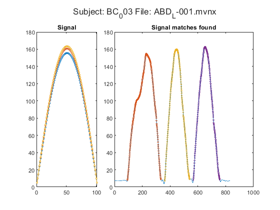
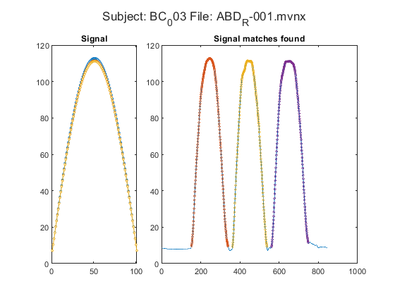

Contents
Extract the range of motion data and write to excel.
This is the main file for the range of motion timecurve analysis as calculated by the xsens system. Data collected with Xsens MVN 2021.2. Nescesary functions:
- MVN.m
- load_mvnx.m
- peakfinder.m
- signalmatching.m
- normalisation.m
code written by dr. Jill Emmerzaal KU Leuven, Tervuursevest 101, box 1501 Research Group for Rehabilitation in Internal Disorders
clearvars; close all; clc
1. input data
Specify:
- Path where all the code is stored
- Path where all the code sections are stored (if not in path.orig)
- Timepoint you want to analyse (e.g. 'T0' or 'T1')
- movement you want to analyse (i.e. 'Af', 'EXO', or 'ABD'
- path where all the data is stored
- define if you want to check the data: plot_or_not = 1 & check_complete = 0
- define if you want to safe the data: plot_or_not = 0 & check_complete = 1
- define the range of subjects you want to analyse (subj = 1:10 runs the first 10 subjects | subj = 10 only runs subject 10 | subj = (1:5 7:10) runs subject 1 through 10 except 6 ect.)
path.orig = "C:\Users\u0117545\Documents\GitHub\ULIFT_BC"; cd(path.orig) addpath("C:\Users\u0117545\OneDrive - KU Leuven\2.Dataprocessing\Matlab\addons") addpath('C:\Users\u0117545\Documents\GitHub\ULIFT_BC') Timepoint = 'T0'; movement = 'ABD'; path.root = 'C:\Users\u0117545\KU Leuven\An De Groef - DATA'; path.out = fullfile(path.orig,'Output'); plot_or_not = 1; check_complete = 1; affected_table = readtable(fullfile(path.root, "Aangedane zijde.xlsx"));
Specify joint angles to analyse
Scapulo also extracts the 3d scapulothoratic movement during the primary movement secondary also include the other two movements in the glenohumeral joint. e.g. if the momvent is ABD (abduction) than primary will only extract the abduction movement from the xsens data. scapulo, will extract abduction from the glenohumeral joint, plus 3D scapulotoracaal angles. secondary will extract the all glenohumaral joint angles. Thus, if you want glenohumeral abduction + the scapulothoratic joint angles than: scapulo = 1; secondary = 0;
scapulo = 0; secondary = 0;
2. load data
for subj = 3 if subj < 10 subj_name = ['BC_00' num2str(subj)]; elseif subj < 100 subj_name = ['BC_0' num2str(subj)]; else subj_name = ['BC_', num2str(subj)]; end fprintf('Processing: %s at Timepoint: %s....... \n', subj_name, Timepoint) path.subj = fullfile(path.root, subj_name, 'Xsens', Timepoint, 'Reproces'); check_subj = exist(path.subj); if check_subj == 7 cd(path.subj) fprintf('\t current directory changed: %s \n', path.subj) %initialize counters counterR = 0; counterR_SSS = 0; counterL = 0; counterL_SSS = 0; counterRUN = 0; content = dir(path.subj); nfiles = size(content,1); % find the affected side idx = find(strcmp(affected_table.ppID, subj_name)); involved = affected_table(idx,:).involved; d = strfind(subj_name,'_'); rownr = str2double(subj_name(d+1:end)); % Start loop through files per subject for file = 1:nfiles try % try to run the following code, if an error occurs % nothing will happen and no data will be exported. % A file will be created with the subject name and % timepoint that caused an error. if contains(content(file).name, movement) && contains(content(file).name, '.mvnx')
file_ik = content(file).name;
[~,name, ~] = fileparts(content(file).name);
[fileName] = regexprep(name, '-', '_');
d = strfind(name,'_');
arm = content(file).name(d+1);
fprintf('\t Analysing: %s \n', fileName)
fprintf('\t\t Arm of interest: %s \n', arm)
if strcmp(arm, involved)
fprintf('\t\t this is the affected side \n')
else
fprintf('\t\t this is the unaffected side \n')
end
Analysing: ABD_L_001 Arm of interest: L this is the unaffected side
Analysing: ABD_R_001 Arm of interest: R this is the affected side
2.1 Load xsens data
Change the filename here to the name of the file you would like to import
fprintf('\t \t %s: read xsens file \n', content(file).name) [sensorData, segmentData, jointData, tree]= MVN(file_ik); if isfield(tree, 'fileComments') fprintf('\t \t \t Comment in file: %s \n', tree.fileComments) end if contains(arm, 'L') jointno = 12; elseif contains(arm, 'R') jointno = 8; else error('Arm is not properly defined in file name') end if strcmp(movement, 'ABD') prim = 1; convention = 'jointAngleXZY'; extrema = 1; if secondary sec = [2,3]; sec_names = {'EXO', 'AF'}; end elseif strcmp(movement, 'AF') prim = 3; convention = 'jointAngle'; extrema = 1; if secondary sec = [1,2]; sec_names = {'ABD', 'EXO'}; end elseif strcmp(movement, 'EXO') prim = 2; convention = 'jointAngle'; extrema = -1; if secondary sec = [1,3]; sec_names = {'ABD', 'AF'}; end end df = jointData(jointno).(convention)(:,prim);
ABD_L-001.mvnx: read xsens file
ABD_R-001.mvnx: read xsens file
extract repetitions
[iStart, iStop, signal] = signalmatching(df, extrema, plot_or_not, subj_name, content(file).name); 
double check
if the absolute difference between iStart and iStop is smaller than 75 samples, there is a high likelyhood that signal matching didn't converge properly. Then you will need to select all the individual start and stop indices manually by cliking in the graph. It might be that some are well defined
div = abs(iStart - iStop);
if sum(div < 75)
fprintf('\t \t %s signal matching did not properly converge \n', content(file).name)
fprintf('\t \t %s: Please refine the borders of the repetitions \n', content(file).name)
figure('Units','normalized','Position',[0.1 0.1 0.75 0.75]);
plot(df); hold on
for idx = 1:size(iStart,1)
plot(iStart(idx):iStop(idx), df(iStart(idx):iStop(idx)), 'o', 'MarkerSize',2)
end
title("Manual segmentation iStart repetitions: " + content(file).name)
[loc, ~] = ginput(6);
if ~isempty(loc)
iStart = round(loc(1:2:end));
iStop = round(loc(2:2:end));
clear loc
close gcf
warning('signal matching did not converge \n iStart and iStop manually selected')
else
error('iStart and iStop are not defined')
end
end
normalise the data to 100 data points
norm_data = zeros(size(iStop,1), 101);
for idx=1:size(iStart,1)
norm_data(idx, :) = normalisation(df(iStart(idx):iStop(idx)), []);
end
display the results
if plot_or_not figure('Units','normalized','Position',[0 0 1 1]); t = tiledlayout(1,3, 'TileSpacing','Compact'); ax1 = nexttile([1 2]); plot(df); hold on for idx = 1:size(iStart,1) plot(iStart(idx):iStop(idx), df(iStart(idx):iStop(idx)), 'o', 'MarkerSize',3) end title('original timecurve with individual reps highlited') ax2 = nexttile; plot(norm_data') xlim([1 101]) title('timenormalised timecurved of the indiv reps') linkaxes([ax1 ax2],'y') sgtitle(['Subject: ',subj_name, ' File: ', content(file).name]) end % scapulo angles if scapulo end % secondary angles if secondary end


export to excel
If the file already exists, than it will append the data to the already exsising file.
if check_complete
norm_mean = mean(norm_data);
temp.prim.table = table(string(subj_name), string(Timepoint), norm_mean);
temp.prim.table.Properties.VariableNames = {'ppID', 'Time', char(movement)};
if strcmp(arm, involved)
filename = fullfile(path.out, ['ROM_aff_', movement, '.xlsx']);
else
filename = fullfile(path.out, ['ROM_unaff_', movement, '.xlsx']);
end
writetable(temp.prim.table, filename, 'WriteMode', 'append', sheet=string(movement))
extract scapulo or secondary angles if applicable
if scapulo if strcmp(arm, 'L') sc_no = 11; elseif strcmp(arm, 'R') sc_no = 8; end for idx = 1:size(iStart,1) norm_data_scapulo.X(idx, :) = normalisation(jointData(sc_no).jointAngle(iStart(idx):iStop(idx),1), []); norm_data_scapulo.Y(idx, :) = normalisation(jointData(sc_no).jointAngle(iStart(idx):iStop(idx),2), []); norm_data_scapulo.Z(idx, :) = normalisation(jointData(sc_no).jointAngle(iStart(idx):iStop(idx),3), []); end scapulo_mean.X = mean(norm_data_scapulo.X); scapulo_mean.Y = mean(norm_data_scapulo.Y); scapulo_mean.Z = mean(norm_data_scapulo.Z); temp.scapulo.X = table(string(subj_name), string(Timepoint), scapulo_mean.X); temp.scapulo.Y = table(string(subj_name), string(Timepoint), scapulo_mean.Y); temp.scapulo.Z = table(string(subj_name), string(Timepoint), scapulo_mean.Z); writetable(temp.scapulo.X, filename, "WriteMode", 'append', sheet = 'ScapuloX') writetable(temp.scapulo.Y, filename, "WriteMode", 'append', sheet = 'ScapuloY') writetable(temp.scapulo.Z, filename, "WriteMode", 'append', sheet = 'ScapuloZ') end if secondary for idx = 1:size(iStart,1) norm_data_sec.(sec_names{1})(idx,:) = normalisation(jointData(jointno).(convention)(iStart(idx):iStop(idx),1), []); norm_data_sec.(sec_names{2})(idx,:) = normalisation(jointData(jointno).(convention)(iStart(idx):iStop(idx),2), []); end secondary_mean.(sec_names{1}) = mean(norm_data_sec.(sec_names{1})); secondary_mean.(sec_names{2}) = mean(norm_data_sec.(sec_names{2})); temp.sec.(sec_names{1}) = table(string(subj_name), string(Timepoint), secondary_mean.(sec_names{1})); temp.sec.(sec_names{2}) = table(string(subj_name), string(Timepoint), secondary_mean.(sec_names{2})); writetable(temp.sec.(sec_names{1}), filename, 'WriteMode','append', sheet = string(sec_names{1})) writetable(temp.sec.(sec_names{2}), filename, 'WriteMode','append', sheet = string(sec_names{2})) end
end
end % if contains movement name and .mvnx catch ME % this section of code displays the subject and filenames % on which an error occured % formatSpec = '\t ERROR: %s at TIMEPOINT: %s in FILENAME: %s \n %s LINE: %s '; % fprintf(formatSpec, subj_name, Timepoint, fileName, ME.message, num2str(ME.stack.line)); % disp(' ') fprintf('\t\t ERROR: %s at TIMEPOINT: %s in FILENAME: %s \n \t\t %s LINE: %s \n', ... subj_name, Timepoint, fileName, ME.message, num2str(ME.stack(:).line)) end% try end% loop through files end% subject exists clear temp df fprintf('*********Finished %s **********\n', subj_name) fprintf('\n') end% end loop through subjects % back to original path cd(path.orig)
Processing: BC_003 at Timepoint: T0....... current directory changed: C:\Users\u0117545\KU Leuven\An De Groef - DATA\BC_003\Xsens\T0\Reproces *********Finished BC_003 **********